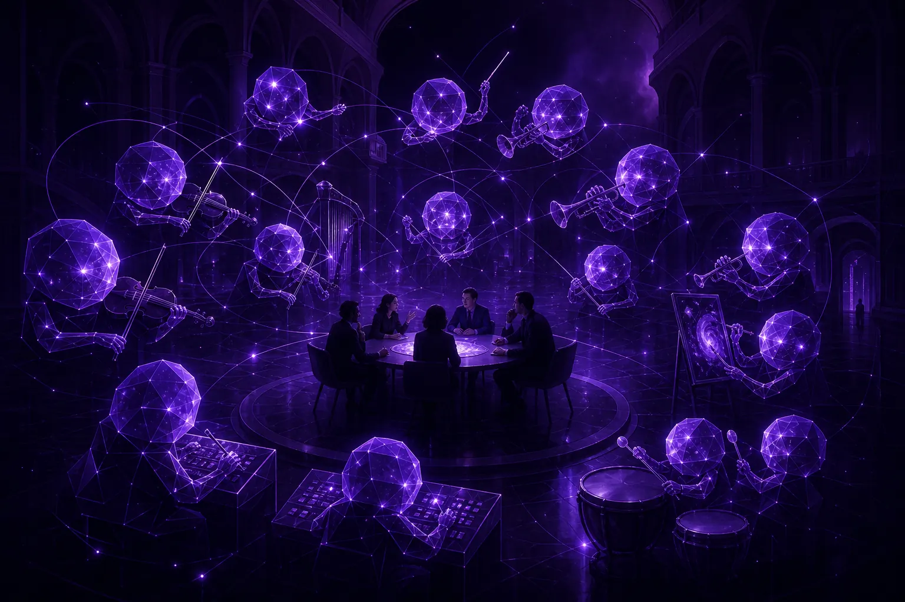

The future marketing org: fewer handoffs, more conductors

In the future marketing organisation, AI agents absorb most production, monitoring and reporting, and human roles shift towards judgement: setting direction, editing creative, governing agents and owning relationships. Teams get flatter and have fewer handoffs. The most important new role is the conductor, a strategist who orchestrates agents and remains accountable for what they produce.
What changes when agents join the team?
Look at any marketing department's week and you will find a chain of handoffs. Research briefs strategy, strategy briefs creative, creative briefs media, media briefs reporting, reporting briefs research again. Each handoff loses context and adds days.
Agents compress that chain. A research agent can pass findings straight to a creative agent, which can pass variants straight to an optimisation agent, all inside one loop. The humans no longer sit between every link. They sit above the loop, deciding what it is for and whether its output is good enough.
Which marketing roles shrink and which grow?
We try to be honest about this, because vague reassurance helps nobody. Understanding the impact of AI on marketing jobs is one of the moments marketers search for most anxiously.
Work that shrinks
- Manual social listening and report compilation.
- First drafts of routine copy and variant production.
- Hourly bid and budget adjustments.
- Status meetings that exist only to move information between teams.
Work that grows
- Conducting: setting goals for agent loops and owning their output.
- Editing: choosing and shaping from abundant options, which is a taste skill.
- Governing: writing charters, reviewing logs, deciding where autonomy is earned.
- Connecting: the human conversations with customers, partners and colleagues that agents should not fake.
Notice that the growing work is mostly senior work. The real organisational challenge is not job loss in the abstract; it is how juniors learn judgement when agents take the tasks they used to learn on. We think the answer is apprenticeship by review: juniors shadow conductors at checkpoints and explain why they would approve or reject.
What does a conductor actually do all day?
The conductor role, defined
A conductor is a marketing strategist who sets goals and boundaries for a set of AI agent loops, reviews their output at checkpoints, makes the brand and ethical calls, and is personally accountable to the business for results.
A typical day: twenty minutes on the overnight agent digest, an hour on creative edits, time with the client or business owner on what the audience research means, and a weekly review of agent logs. Less time in spreadsheets. More time thinking and talking.
How small can a marketing team get?
Smaller than today, but not as small as the hype suggests. Agents scale execution; they do not scale accountability or relationships. A brand still needs people who know the customer, understand the business and can stand behind a decision in a boardroom.
This is exactly the question the community at Marketing Mondays is putting to a room of marketing leaders on 12 October 2026 in Singapore: "The 2027 marketing team: smaller, faster, or obsolete?" Our view going in: smaller and faster, with conductors at the centre. Obsolete only for teams that confuse output with judgement.
How should a CMO start redesigning the team?
- Map the handoffs. List every point where work passes between people or teams. These are your first candidates for agent loops.
- Name the conductors. Decide who will own each loop. If nobody can, the loop is not ready.
- Write charters. Our one-page charter is a usable starting point.
- Protect human moments. Decide which customer interactions stay human by design. We go deeper in keeping human connection in automated marketing.
- Measure judgement, not volume. Track decisions made and their quality, not assets produced.
Where does the evidence come from?
Conductors are only as good as the signal in front of them. Our agents run on SOMIN, an AI audience-research platform, so the research loop is grounded in what real audiences actually say. For in-house teams, SOMIN for brands explains how that research layer works without an agency in between, and the Fujifilm case study shows a global brand applying AI audience insight to its marketing.
If your redesign raises questions about which reasoning models to put underneath your agents, our sister studio GPT5 Marketing works with CMOs on exactly that.
The future marketing team is not the one with the most agents. It is the one where every agent has a conductor.
What new rituals does an agentic team need?
Org charts matter less than habits. Three rituals tend to separate teams that thrive with agents from teams that merely tolerate them.
- The morning digest: a short read of what agents did overnight and what is waiting for a decision, owned by each conductor.
- The weekly edit: a session where the team reviews agent output together and argues about taste. This is where juniors learn fastest.
- The monthly autonomy review: a look at the logs to decide which agents have earned more freedom and which need tighter limits.
None of these require new software. They require leaders who treat judgement as the team's core product. Teams that skip these rituals tend to drift into one of two failures: humans rubber-stamping agents, or humans redoing agent work by hand and wondering why nothing got faster. Both waste the investment. The rituals keep people and agents in their proper parts.
If you are sketching your 2027 org chart and want to test it against a working agentic setup, brief the agents at ask@agentc.marketing.
Frequently asked questions
Will AI agents replace marketing teams?
They will replace a lot of production and monitoring work, but not judgement, accountability or relationships. Teams are likely to get smaller and flatter, with more senior roles focused on conducting agents.
What is a marketing conductor?
A strategist who sets goals and boundaries for AI agent loops, reviews their output at checkpoints, makes brand and ethical decisions, and is accountable for the results.
How do junior marketers learn if agents do the junior tasks?
AgentC recommends apprenticeship by review: juniors join conductors at checkpoints and explain what they would approve or reject and why, building judgement directly.
Brief the agents
AgentC is an agentic marketing agency. Our agents research, create and optimise around the clock; our strategists decide what matters, what fits the brand and what should never be automated.
Email ask@agentc.marketing →